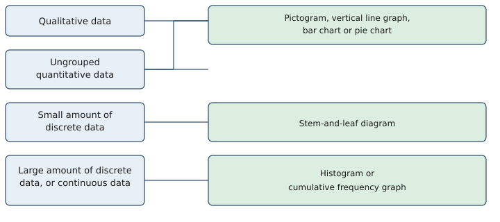

<script src="/assets/redirect.js"></script>
<section class="theory" data-section="S1-1.5">
<h2>1.5 Comparing different data representations</h2>
<p class="src">Based on Cambridge International AS &amp; A Level Mathematics: Probability &amp; Statistics 1 Coursebook (Dean Chalmers), Chapter 1 Representation of data, printed pp.20–23 (the comparison chart, Exercise 1D, checklist). Own wording and new numbers. Measures of central tendency and variation, and box-and-whisker plots, are left to later chapters, as in the book’s Fast forward.</p>
<p class="key-words"><strong>Key words:</strong> <em>data representation</em>, <em>stem-and-leaf diagram</em>, <em>histogram</em>, <em>cumulative frequency graph</em></p>
<p>Pictograms, vertical line graphs, bar charts and pie charts are useful for displaying qualitative data and ungrouped quantitative data. For a small set of ungrouped discrete values, a stem-and-leaf diagram has the advantage that every raw value can still be seen after the data have been arranged.</p>
<p>With a large data set the individual recordings lose their separate interest, and a compact picture of the whole is more useful. Grouping the values into a frequency table is a first step, but most people find the pattern easier to read when it is drawn. A histogram and a cumulative frequency graph can display grouped data in classes of any width, although the original recordings themselves are no longer visible. The vertical axis of a histogram is frequency density, and the points of a cumulative frequency graph are plotted at the upper class boundaries.</p>
<p>The choice of data representation depends on the type and quantity of the data, the audience, and the purpose of the display. The representation must show the data clearly and must not be misleading.</p>
<p>These pages compare different data representations so that a suitable display can be chosen. A common error is using a bar chart for classes of unequal width.</p>
<p></p>
<div class="worked-example">
<h4>Worked example 1: A small discrete data set</h4>
<p class="src">Book: the comparison on p.20 and Exercise 1D question 3; new context and numbers</p>
<p>A coach records the 11 ungrouped sprint times, in seconds, \(11.6\), \(12.4\), \(11.2\), \(13.1\), \(12.0\), \(11.8\), \(12.7\), \(13.5\), \(11.4\), \(12.2\) and \(12.9\).</p>
<ol class="steps">
<li>A stem-and-leaf diagram is a suitable data representation because the data set is small and discrete, and every raw time remains visible once the leaves have been written down. <span class="mark">B1</span></li>
<li>A bar chart of these 11 values would use 11 separate categories (or many empty bars if the times were treated as a scale), and the exact recordings would be harder to recover than from a stem-and-leaf diagram. A histogram or a cumulative frequency graph would require grouping, which would hide the raw times. <span class="mark">B1</span></li>
</ol>
<p class="final"><strong>Answer:</strong> A stem-and-leaf diagram, because the set is small and every raw time can still be read.</p>
</div>
<div class="worked-example">
<h4>Worked example 2: A large set of continuous data</h4>
<p class="src">Book: the comparison chart on p.20 and Exercise 1D question 2; new context</p>
<p>The masses of \(200\) parcels are grouped into classes of unequal width. The sender wants a diagram that makes clear that most parcels have masses in a particular range, without suggesting that classes of different widths are equally important.</p>
<ol class="steps">
<li>A histogram is suitable: the data are continuous and numerous, classes may have any width, and column area is proportional to frequency, so a wider class is not over-emphasised. A cumulative frequency graph is also suitable if the purpose is to estimate how many parcels lie below a given mass. <span class="mark">B1</span></li>
<li>A stem-and-leaf diagram is impractical for \(200\) recordings. A bar chart with one bar per class would treat unequal widths as if they were comparable categories, which would be misleading. <span class="mark">B1</span></li>
</ol>
<p class="final"><strong>Answer:</strong> A histogram (or a cumulative frequency graph), because the data are continuous, numerous and grouped in classes of unequal width.</p>
</div>
<h3>Common mistakes</h3>
<ul>
<li>Choosing a bar chart for continuous data in classes of unequal width, so that a wider class looks more important than its frequency justifies.</li>
<li>Drawing a stem-and-leaf diagram for a very large data set, or expecting a histogram or a cumulative frequency graph to show the original individual recordings.</li>
<li>Using a display that hides the feature the audience needs, or that is misleading (for example a vertical scale that does not start at zero when a comparison of frequencies is the point).</li>
</ul>
<h3>Quick checks</h3>
<div class="quick-check">
<h4>Quick check 1</h4>
<p>A stem-and-leaf diagram is drawn for \(14\) ungrouped discrete readings. How many of those raw readings can still be read from the diagram?</p>
<details><summary>Worked solution</summary>
<p>A stem-and-leaf diagram keeps every raw value, so all \(14\) readings can still be read.</p>
</details>
</div>
<div class="quick-check">
<h4>Quick check 2</h4>
<p>A histogram is drawn from grouped continuous data. How many of the original individual recordings can be read exactly from the histogram?</p>
<details><summary>Worked solution</summary>
<p>Grouping hides the individual recordings, so the number that can be read exactly is \(0\).</p>
</details>
</div>
<div class="quick-check">
<h4>Quick check 3</h4>
<p>Four representations are considered for the same large set of grouped continuous measurements: a stem-and-leaf diagram, a histogram, a cumulative frequency graph and a pie chart. How many of these four are appropriate for this type and quantity of data?</p>
<details><summary>Worked solution</summary>
<p>A histogram and a cumulative frequency graph are appropriate. A stem-and-leaf diagram is impractical for a large set, and a pie chart is intended for qualitative or ungrouped categorical data. The number of appropriate representations is \(2\).</p>
</details>
</div>
<p class="marks-key">B marks are for a correct statement; M marks are for a correct method; A marks are for an accurate result.</p>
</section>
